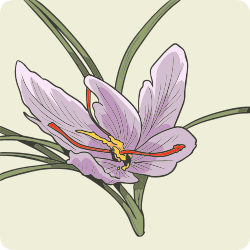
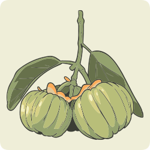

Regular o apetite é uma tarefa complexa no corpo, pois envolve interação de muitas vias neuronais, hormônios, neuromoduladores, substratos e estímulos. Algumas plantas medicinais, nesse contexto, parecem contribuir com a redução do apetite, causando um efeito anorexígeno e regulando neurotransmissores como a serotonina.
A relação da compulsão alimentar no obeso é descrita na literatura em pesquisas, demonstrando haver alta incidência de comportamentos de compulsão alimentar entre os pacientes com excesso de peso e obesos. Exemplos de plantas medicinais com ação de controle de apetite e compulsão alimentar:

Crocus sativus (Iridaceae)
(açafrão verdadeiro)

Garcinia cambogia (Clusiaceae)
(garcínia)
Gymnema sylvestre (Apocynaceae)
(gimnema)